Sports
"All work and no play makes Jack a dull boy." I take this quote very seriously, some much infact that I sometimes forget about the work part and go all in on the playing part.
I love playing many sports, both indoor and outdoor. Some
for recreation, and some competitively. But the one sport I absolutely love is
Cricket
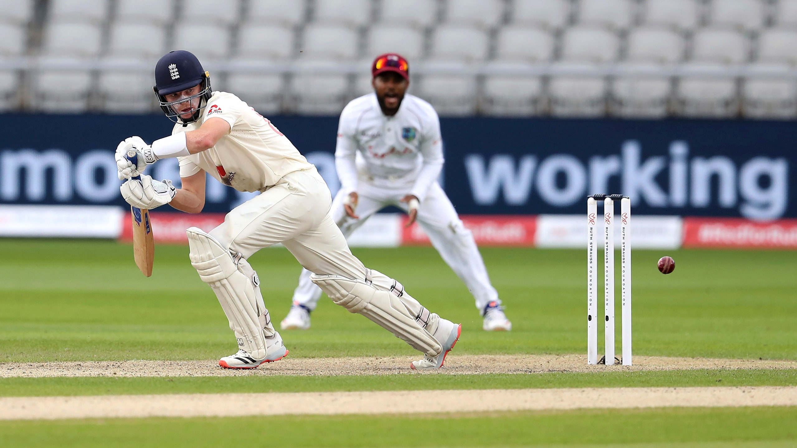
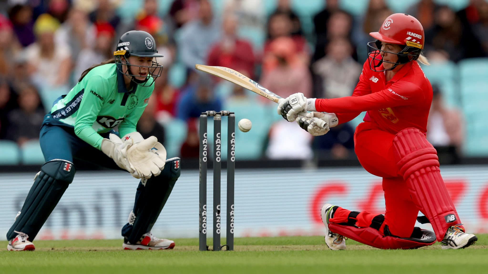
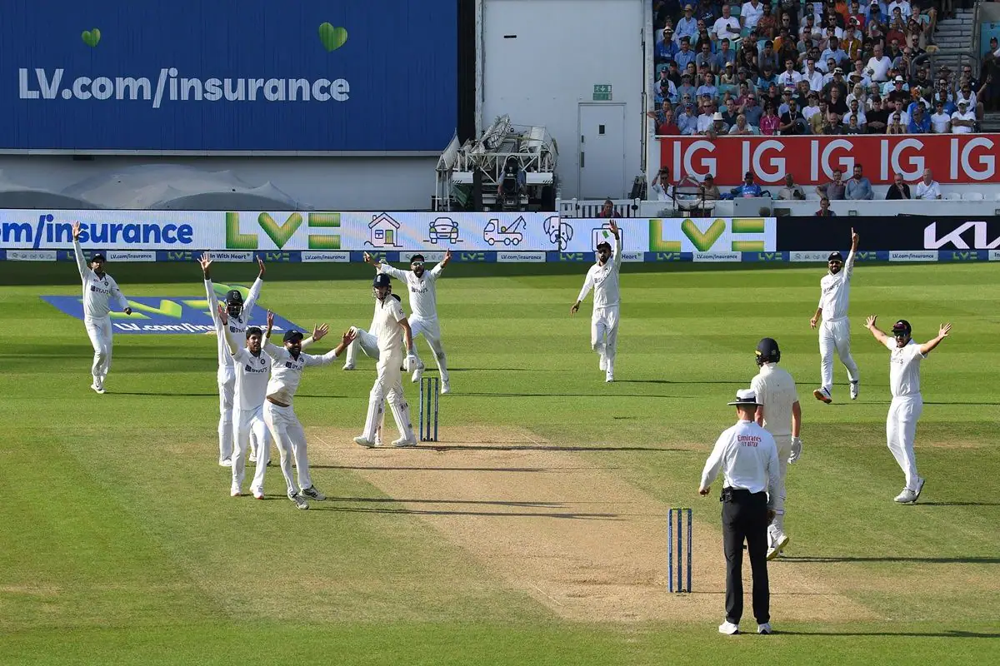
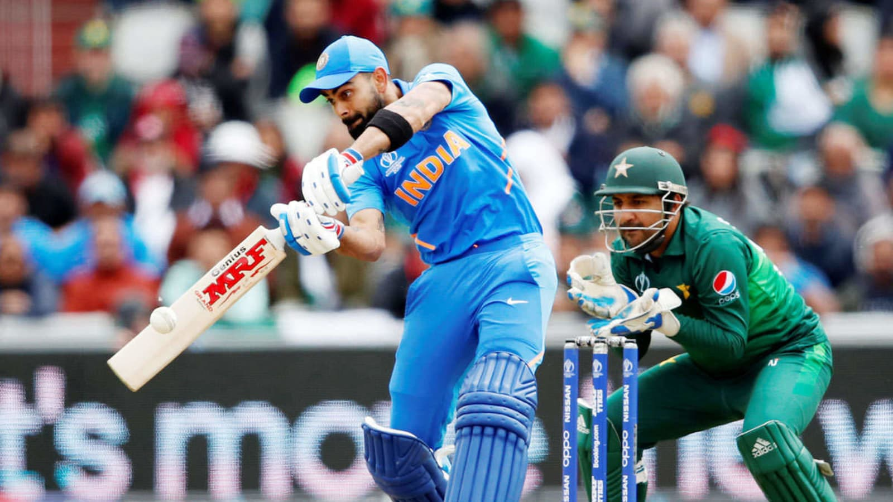
I used to play for my school from grade 8. I also participated in many interschool and club tournaments like DSO and MSSA.
Another sport that I love to play is
Football
 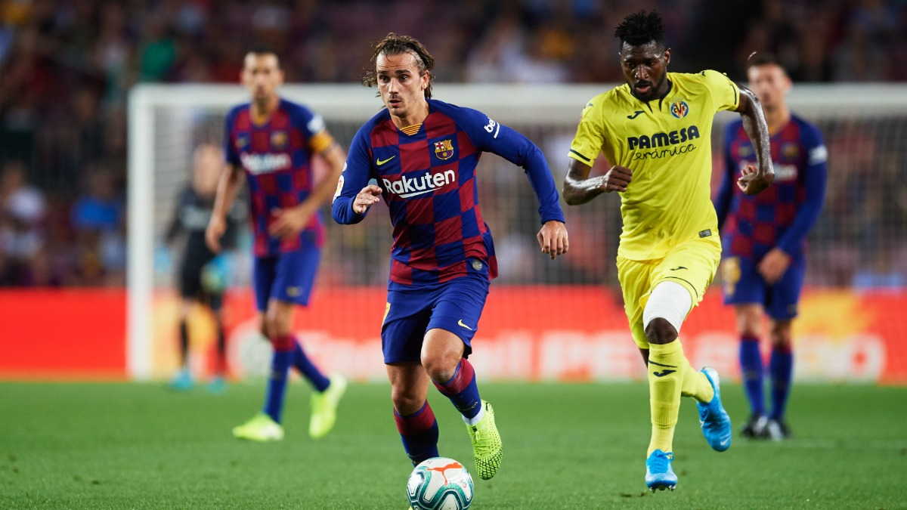
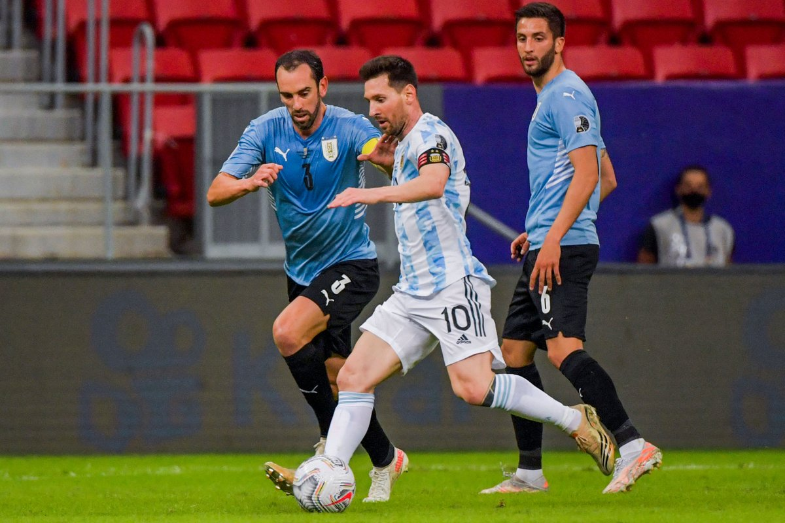
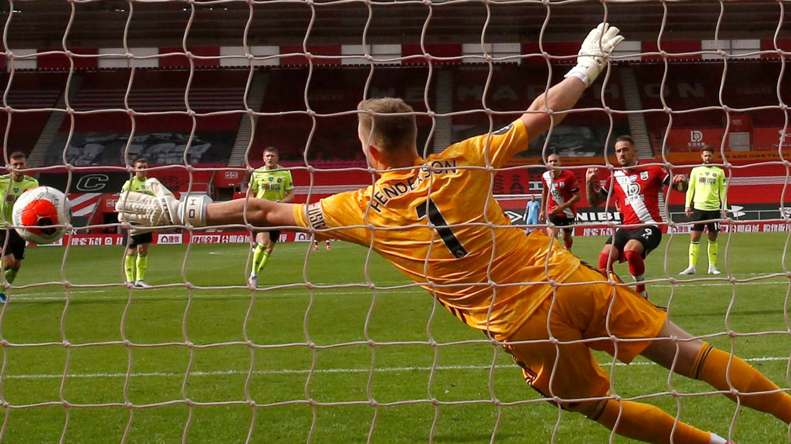
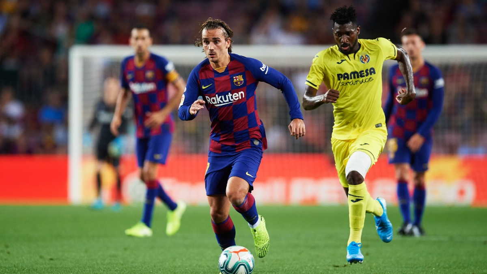
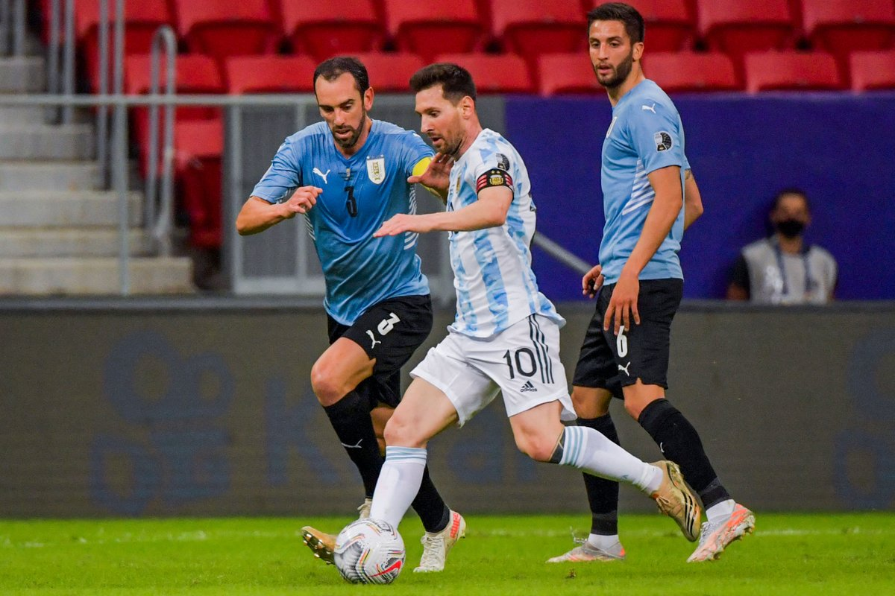
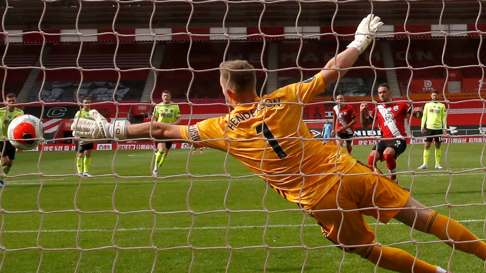
Although I haven't played this sport much, I seemed to gain a lot of interest in watching it during the lockdown. I would definately want to learn how to play this sport in the future.
Tennis
 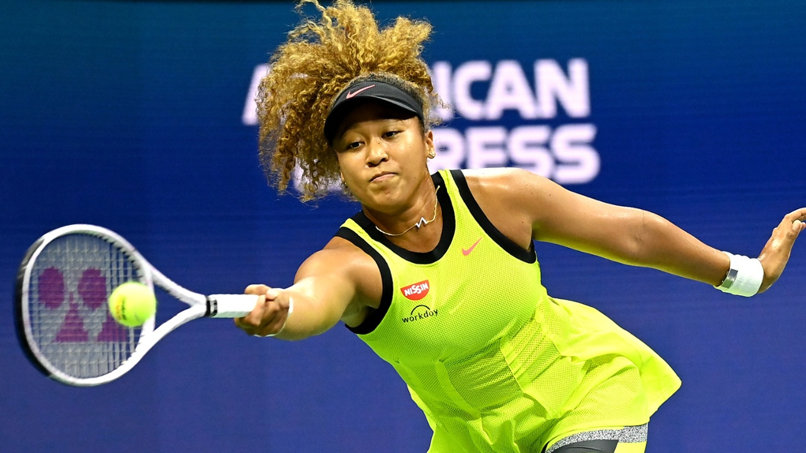
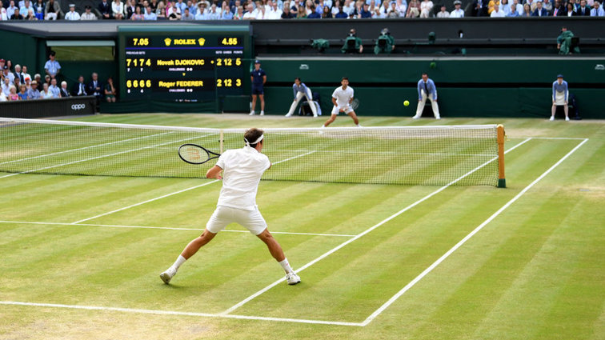
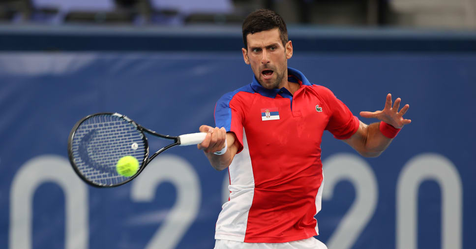
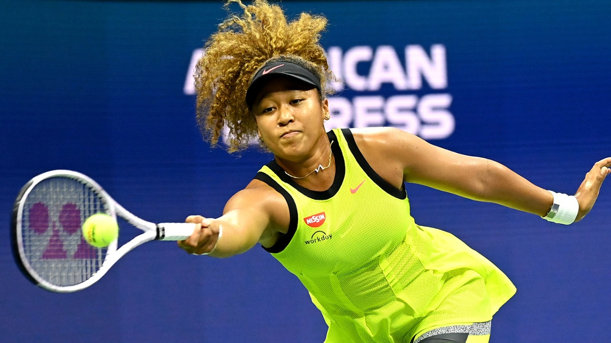
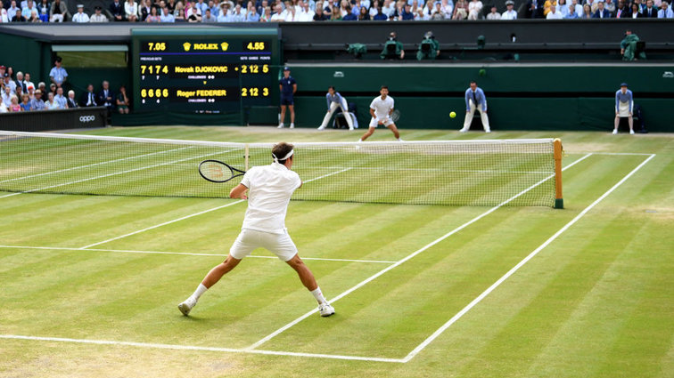
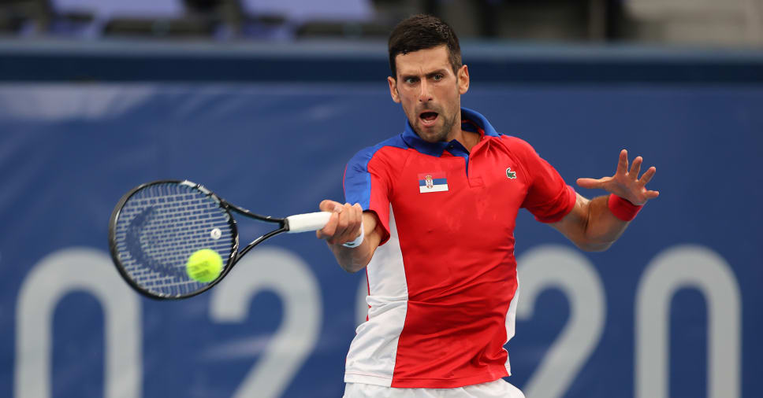